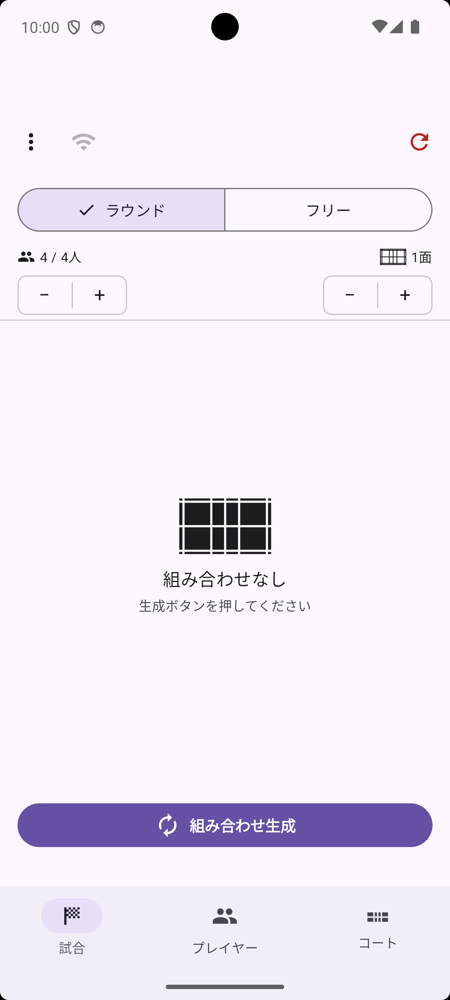
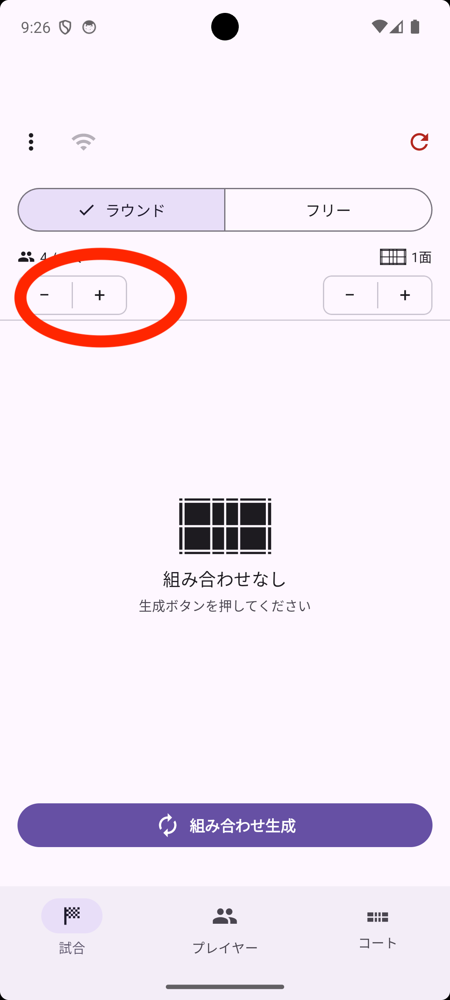
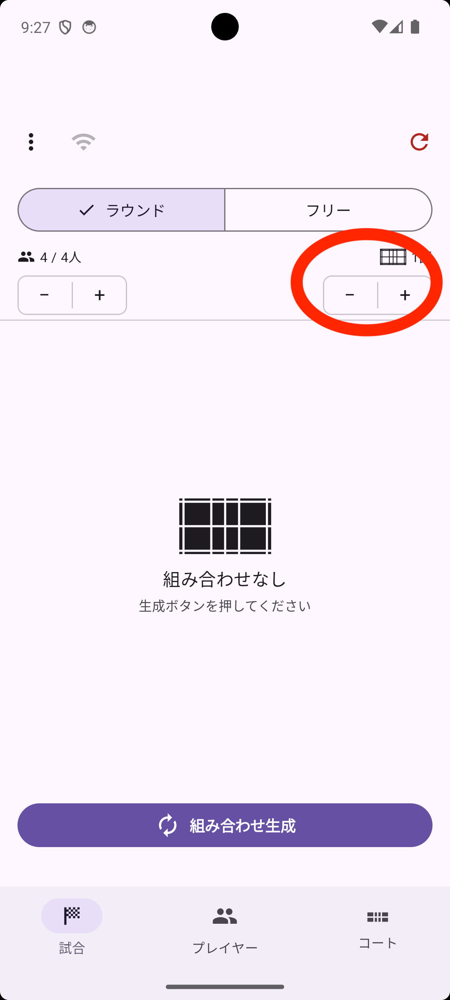
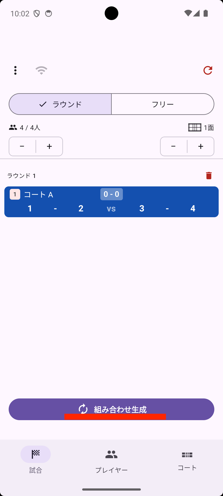

くみあぷ（PairGen）は 試合・プレイヤー・コート の3つのタブで構成されています。まずは基本の流れを試してみましょう。

試合 タブの上部左側に「4 / 4人」と表示されています。この下にある − / + ボタンをタップするだけで、プレイヤー数を増減できます。

初期状態では「1」「2」「3」「4」という番号が名前として割り当てられています。詳しく名前を変えたい場合は、プレイヤー タブで編集できます。
試合 タブの上部右側に「1面」と表示されています。この下にある − / + ボタンをタップするだけで、コート数を増減できます。

詳しくコート設定（名前やレベル）を変えたい場合は、コート タブで調整できます。
試合 タブで 組み合わせ生成 ボタンをタップします。プレイヤーが各コートに自動で割り当てられます。

各行が1つのコートの試合を示しています。左側に付いているバッジはレベルを、右側のスコアは現在のゲーム結果を表します。
ボタンをもう一度タップすると、次のラウンドの組み合わせが追加されます。重複が少なくなるよう自動的に調整されます。スコアは前のラウンドが記録されたままになります。
↻（リセット）ボタンをタップすると、試合結果をリセットできます。